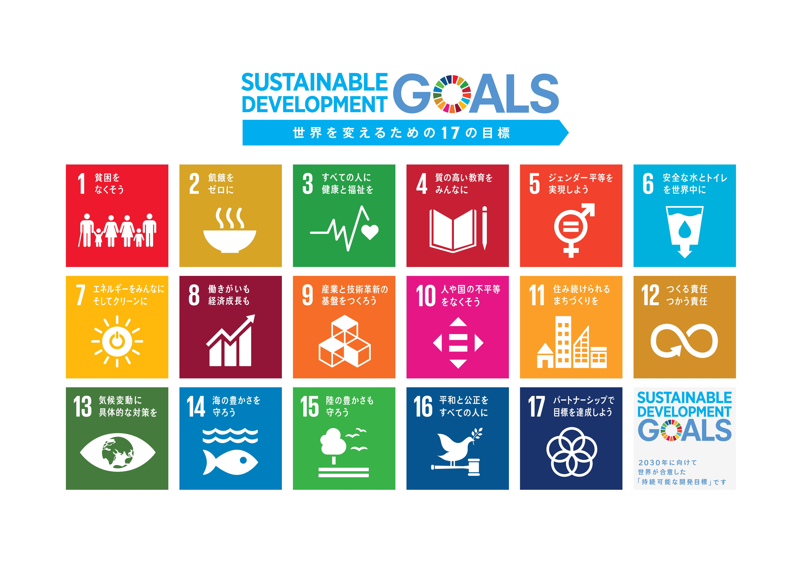

「SDGs（エスディージーズ）」とは、「Sustainable Development Goals（持続可能な開発目標）」の略称で、2015年9月に開かれた国連サミットの中で採択された、国際目標です。

持続可能な世界を実現するための17のゴール・169のターゲットから構成され，地球上の誰一人として取り残さない（leave no one behind）ことを誓っています。SDGsは発展途上国のみならず，先進国自身が取り組むユニバーサル（普遍的）なものであり，日本としても積極的に取り組んでいます
このサミットでは、2015年から2030年までの長期的な開発の指針として、「持続可能な開発のための2030アジェンダ」が採択されました。この文書の中核を成す「持続可能な開発目標」をSDGsと呼んでいるのです。
はじめに
SDGsとLCA
SDGsの17ある目標の中でも、地球環境問題についてのテーマ「13 気候変動に具体的な対策を」は世界共通で喫緊の課題として認識されており、我々には、地球環境に負荷のかからない行動を選択する責任が課せられています。
では環境に負担のかからない行動とはどのように決めるのでしょうか。世間には環境に「よい」、「やさしい」といったことば・表現が溢れています。しかし単に「よい」 、「やさしい」というのは主観的な判断にすぎません。誰もが納得するには、客観的な根拠が必要です。客観的な根拠に基づくことで、本当に「よい」のか、「やさしい」のか、を判断することができるのです。
この客観的な根拠を得られるものの１つがライフサイクルアセスメント（LCA）という考え方です。LCAでは、選定対象について、条件を設定したうえで、それがエネルギー、CO2、水収支などにどのような影響を与えるかを情報収集、計算、記述、分析することで客観的根拠を示すことができます。
このサイトでは LCA の考え方を、体系的に学ぶことができます。LCA について学び、環境に配慮した行動を選択する力を身に着けてもらえれば幸いです。